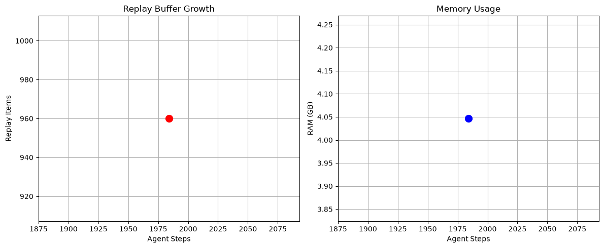

前面写了好几篇世界模型的理论文章——从 RSSM 的数学原理到 Sim-to-Real 迁移，到 VLA 和世界模型的对比。有读者问：道理我都懂了，怎么动手跑起来？
今天这篇就是回答这个问题的。我会手把手带你搭建一个完整的世界模型实验环境，从安装到训练到可视化，一步步走通。跑通之后，你就可以在这个基础上做自己的实验了。
我们选用的工具链是：MuJoCo（物理仿真）+ DreamerV3（世界模型）。如果你需要更高保真度的渲染，后面可以替换为 Isaac Sim，但入门阶段 MuJoCo 足够了。
工具选型：为什么是这两个
MuJoCo：目前机器人仿真领域最主流的引擎之一。物理精度高、API 简洁、速度快。2021 年被 DeepMind 收购后开源免费，现在是机器人学习研究的事实标准，也是连续控制世界模型研究中最常用的 benchmark 之一。
DreamerV3：Danijar Hafner 等人开发的世界模型算法，是 Dreamer 系列的第三代。它用 RSSM（循环状态空间模型）学习环境动态，在想象空间中训练 Actor-Critic 策略。代码开源，文档清晰，是学习世界模型最好的起点。需要注意的是，DreamerV3 底层基于JAX + Haiku框架，而非 TensorFlow。
日志格式说明：DreamerV3（commit e3f02248）输出自己的日志格式（metrics.jsonl 和 scores.jsonl），不使用 TensorBoard 的 event files。虽然名字里带"json"，但这是 JSON Lines 格式（每行一个 JSON 对象），可以用 Python 直接读取和可视化。本教程会教你如何用 Python 分析这些日志。
如果你本地机器内存不足（低于 32GB），建议使用云端资源：
- Google Colab：免费 GPU，内存约 12-25GB，适合快速验证。注意 Colab 的 session 有时长限制
- AutoDL / 矩池云：国内云平台，按小时计费，GPU 机型丰富
- AWS / GCP / Azure：按需启动 GPU 实例，适合长期实验
云端运行的好处是不受本地硬件限制，坏处是需要上传下载数据和模型。对于入门学习，Google Colab 是最经济的选择。
第一步：环境准备
先确认你的系统环境。本教程在以下环境验证通过：
- 操作系统：Ubuntu 22.04.5 LTS（Jammy Jellyfish），内核 6.8.0-124-generic，x86_64 架构。也适用于 Ubuntu 20.04/22.04 其他版本，macOS 和 WSL2
- Python：3.10 或 3.11（DreamerV3 对 Python 版本有要求）
- GPU：可选但强烈推荐。有 NVIDIA GPU 可以显著加速训练
- 内存：至少 32GB（实测 14GB + 4GB swap 仍会在 JAX 编译阶段 OOM）。如果使用 Google Colab 或云服务器，选择高内存配置
创建一个新的 conda 环境：
conda create -n worldmodel python=3.11
conda activate worldmodel如果你有 NVIDIA GPU，需要安装带 CUDA 支持的 JAX（DreamerV3 的底层框架）。默认的 pip install jax 只装 CPU 版，GPU 用户需要显式指定：
# GPU 用户（CUDA 12）
pip install "jax[cuda12]"
# 如果需要指定 CUDA 版本，参考 JAX 官方文档：
# https://jax.readthedocs.io/en/latest/installation.html安装完成后，验证 GPU 是否被正确识别：
python -c "import jax; print(jax.devices())"如果输出包含 GpuDevice(id=0)，说明 GPU 配置成功。如果只看到 CpuDevice(id=0)，说明 JAX 没有使用 GPU——需要检查 NVIDIA 驱动和 CUDA 版本是否匹配。
第二步：安装 MuJoCo
MuJoCo 现在可以通过 pip 直接安装，比以前方便很多：
pip install mujoco验证安装是否成功：
python -c "import mujoco; print(mujoco.__version__)"如果输出版本号，说明安装成功。
如果你想要可视化渲染（看到机器人的 3D 画面），还需要安装渲染后端。这一步是很多新人踩坑的地方——尤其是在远程服务器上。
# 安装渲染依赖
pip install mujoco[extras]
# Linux 无 GPU 或 headless 服务器，还需要安装 OSMesa
sudo apt-get install libosmesa6-dev在远程服务器或无显示器的机器上，必须显式设置渲染后端环境变量，否则会报 GLFW 错误：
# 有 NVIDIA GPU 的服务器
export MUJOCO_GL=egl
# 无 GPU 的服务器
export MUJOCO_GL=osmesa建议把这行加到 ~/.bashrc 中，避免每次重新设置。可以用以下命令确认 GPU 状态：
nvidia-smi第三步：安装 DreamerV3
DreamerV3 的官方代码在 GitHub 上。需要说明的是，DreamerV3 不是一个传统的 Python 包——它的代码结构、依赖管理和运行入口在不同版本间有过变化。为了保证可复现性，建议锁定到一个特定的 commit：
git clone https://github.com/danijar/dreamerv3.git
cd dreamerv3
# 锁定到本教程验证过的 commit（避免后续版本变动导致命令不兼容）
git checkout e3f02248
pip install -r requirements.txt注意：requirements.txt 中包含 ale_py==0.9.0（Atari 游戏环境依赖），该版本在 PyPI 上已下架。如果你只做 MuJoCo/DM Control 任务，可以跳过这个包：grep -v "ale_py" requirements.txt | grep -v "autorom" | pip install -r /dev/stdin。或者手动编辑 requirements.txt，删除 ale_py 和 autorom 两行后再安装。
如果你要用 MuJoCo 环境做实验，还需要安装 DeepMind 的控制库：
# DeepMind Control Suite（包含 MuJoCo 预定义任务）
pip install dm-control注意：网上有些教程会写 pip install dm-control-suite，这个包不存在。正确的包名是 dm-control。
了解代码结构：不是黑盒
在跑实验之前，先看一下 DreamerV3 的代码结构，知道核心组件在哪里。否则你只是在运行一个黑盒：
dreamerv3/
── dreamerv3/ # 核心算法
│ ├── agent.py # Agent 主逻辑（Actor、Critic、世界模型训练）
│ ├── rssm.py # RSSM 核心实现（循环状态空间模型）
│ ├── configs.yaml # 超参数配置（defaults、dmc_vision、dmc_proprio、atari 等预设）
│ └── main.py # 训练入口
├── embodied/ # 通用框架
│ ├── core/ # 基础设施
│ │ ├── replay.py # 经验回放缓冲区
│ │ ├── streams.py # 数据流处理
│ │ ├── wrappers.py # 环境封装
│ │ └── ...
│ ├── envs/ # 环境适配
│ │ ├── dmc.py # DM Control（MuJoCo 任务）
│ │ ├── atari.py # Atari 游戏
│ │ ├── from_gym.py # Gymnasium 适配
│ │ └── ...
│ ├── jax/ # JAX/Haiku 实现
│ │ ├── agent.py # JAX 版 Agent
│ │ ├── nets.py # 神经网络定义
│ │ ├── heads.py # 输出头（预测观测、奖励等）
│ │ ├── opt.py # 优化器
│ │ └── ...
│ └── run/ # 训练流程
│ ├── train.py # 训练循环
│ ├── parallel.py # 并行训练
│ └── train_eval.py # 训练 + 评估
├── scores/ # 预置的 benchmark 分数
├── Dockerfile # Docker 配置
├── requirements.txt # Python 依赖
├── baselines.yaml # 基线配置
├── plot.py # 可视化脚本
└── README.md几个关键位置：
- RSSM（循环状态空间模型）：在
dreamerv3/rssm.py中实现，这是世界模型的核心——负责编码观测、预测未来状态 - Agent 逻辑：在
dreamerv3/agent.py中，包含 Actor、Critic、想象训练的完整流程 - 神经网络定义：在
embodied/jax/nets.py和heads.py中，JAX/Haiku 框架实现 - DM Control 适配：在
embodied/envs/dmc.py中，封装 MuJoCo 任务接口 - 训练入口：
dreamerv3/main.py，解析配置并启动训练 - 超参数配置：
dreamerv3/configs.yaml，包含 defaults、dmc_vision、dmc_proprio 等预设配置
了解这些位置后，你可以直接去看 RSSM 的前向传播是怎么写的，比读论文更直观。
第四步：跑第一个实验
环境都装好了，现在来训练一个世界模型。第一个实验我们选一个相对简单的任务：Cartpole Balance——让小车学会把杆子保持在竖直位置。这个任务动作维度低、收敛快，适合验证环境是否配置正确。
DreamerV3 的默认配置（
dreamerv3/configs.yaml 第 73 行）将 JAX 计算平台设为 cuda。如果你的机器没有 NVIDIA GPU，JAX 在初始化时会因找不到 CUDA 设备而直接崩溃，报错信息如下：
File "jax/_src/xla_bridge.py", line 903, in backends
assert _default_backend is not None
AssertionError
这不是你的代码有问题，而是 DreamerV3 默认假设你有 GPU。解决方法：在所有训练命令后加上 --jax.platform cpu 参数，强制 JAX 使用 CPU 后端。下面的命令已包含此参数。
另外，
embodied/jax/internal.py 中的 jax.config.update('jax_platforms', platform) 会覆盖环境变量 JAX_PLATFORMS，所以单独设置环境变量 export JAX_PLATFORMS=cpu 是无效的——必须通过命令行参数覆盖。
在运行之前，先确认当前仓库支持哪些任务名和配置。建议先查看：
# 查看可用的任务和配置
python dreamerv3/main.py --help确认任务名后，运行训练命令：
python dreamerv3/main.py \
--logdir ~/logdir/wm_cartpole_balance \
--configs defaults dmc_vision \
--task dmc_cartpole_balance \
--run.steps 1e6 \
--jax.platform cpu重要：--jax.platform cpu 参数告诉 JAX 使用 CPU 后端。DreamerV3 默认配置（configs.yaml 第 73 行）将 JAX 平台设为 cuda，如果你的机器没有 NVIDIA GPU，JAX 会因找不到 CUDA 设备而崩溃（报 AssertionError）。有 GPU 的用户可以省略此参数，或改为 --jax.platform gpu。
参数说明：
--logdir：日志和模型保存路径--configs：预设配置，defaults 是基础配置，dmc_vision 是 MuJoCo 视觉任务配置，dmc_proprio 是本体感知配置（具体名称以 configs.yaml 为准）--task：具体任务名，cartpole_balance 是小车平衡任务--run.steps 1e6：训练 100 万步--jax.platform cpu：指定 JAX 使用 CPU 后端（无 GPU 环境必须加）
关于训练时间：这取决于你的硬件配置。单卡消费级 GPU（如 RTX 3060 以上）大约几十分钟到几小时；如果没有 GPU，纯 CPU 训练可能需要一天甚至更久。整体跨度从几十分钟到数十小时不等。
如果你只是想快速验证流程是否跑通，可以先用少量步数：
python dreamerv3/main.py \
--logdir ~/logdir/wm_test \
--configs defaults dmc_vision \
--task dmc_cartpole_balance \
--run.steps 1e4 \
--jax.platform cpu1 万步大概几分钟就能跑完（GPU），足以验证整个流程。CPU 环境会慢一些，但也能在合理时间内跑完。
Cartpole Balance 跑通之后，可以逐步升级难度：
# 难度递增推荐
dmc_cartpole_balance # ⭐ 入门
dmc_walker_stand # ⭐⭐ 站立
dmc_cheetah_run # ⭐⭐⭐ 奔跑
dmc_walker_walk # ⭐⭐⭐ 行走（多关节协调）
dmc_humanoid_walk # ⭐⭐⭐⭐⭐ 人形行走（最难）第五步：查看训练日志
DreamerV3（commit e3f02248）不使用 TensorBoard 格式，而是输出自己的日志文件。训练过程中，日志会写入 logdir 下的两个文件：
metrics.jsonl：训练指标，每约 2000 步写入一行，包含 replay buffer 状态、FPS、内存占用等scores.jsonl：episode 分数，每完成一个 episode 写入一行
训练运行时，终端会定期输出指标摘要：
--------------------[Agent Step 1_984]--------------------
Metrics filtered by: 'score|length|fps|ratio|train/loss/|train/rand/'
replay/replay_ratio 1.08 / fps/policy 8.96 / fps/train 0你可以直接查看日志文件：
# 查看训练指标
cat ~/logdir/wm_test/metrics.jsonl
# 查看 episode 分数（需要完成至少一个 episode 才有数据）
cat ~/logdir/wm_test/scores.jsonl用 Python 画训练曲线：
import json
import matplotlib.pyplot as plt
# 读取 metrics.jsonl
with open('/home/ubunu2204/logdir/wm_test/metrics.jsonl') as f:
metrics = [json.loads(line) for line in f]
print('指标键名:', list(metrics[0].keys()) if metrics else 'No data')
# 画 replay buffer 增长曲线
steps = [m['step'] for m in metrics]
items = [m.get('replay/items', 0) for m in metrics]
plt.figure(figsize=(10, 5))
plt.plot(steps, items)
plt.xlabel('Agent Steps')
plt.ylabel('Replay Items')
plt.title('DreamerV3 Training Progress')
plt.savefig('training_progress.png')
plt.show()
# 如果有 scores.jsonl 数据，画 episode return
try:
with open('/home/ubunu2204/logdir/wm_test/scores.jsonl') as f:
scores = [json.loads(line) for line in f]
if scores:
plt.figure(figsize=(10, 5))
plt.plot([s.get('step', i) for i, s in enumerate(scores)],
[s.get('score', s.get('return', 0)) for s in scores])
plt.xlabel('Step')
plt.ylabel('Episode Score')
plt.title('Episode Returns')
plt.savefig('episode_scores.png')
plt.show()
except:
print('scores.jsonl 暂无数据，需要更多训练步数')运行后会生成类似这样的图表（这是从实际训练日志中绘制的数据点）：

注意：训练初期（前 ~2000 步）replay buffer 还在填充，此时不会写入 metrics。需要足够步数完成第一个 episode 后，scores.jsonl 才会有数据。Cartpole Balance 任务通常需要几千到几万步才能完成第一个 episode。
进阶：观察世界模型的"想象"
这篇文章的标题是"世界模型"，但到目前为止我们主要在看策略训练。世界模型最核心的能力其实是想象——给定当前状态和动作，预测未来会发生什么。DreamerV3 的策略就是在想象空间中训练的，所以理解这个能力很重要。
什么是"想象"
想象（imagination）在 DreamerV3 中的具体含义是：RSSM 从当前 latent state 出发，不依赖真实环境，自主推演未来多步。每一步 RSSM 都会输出：
- 下一个 latent state：编码后的未来状态
- 预测观测：通过 decoder 重建的画面（64×64 像素）
- 预测奖励：估计的即时奖励
- 预测终止：episode 是否结束
这个过程完全在模型内部进行，不需要和真实环境交互。Actor-Critic 策略就是在这个想象空间中训练的——Actor 选择动作，Critic 评估价值，都在"脑海"中完成。
如何观察想象质量
最直观的方式是对比想象画面和真实画面。具体做法：
- 从真实环境中采集一段轨迹（比如 100 步）
- 用 RSSM encoder 编码第一步观测，得到初始 latent state
- 从第二步开始，用真实动作驱动 RSSM 做 rollout（teacher forcing）
- 每一步用 decoder 重建画面，和真实画面对比
如果世界模型学得好，重建画面应该和真实画面非常接近。随着推演步数增加，误差会逐渐累积，画面可能变模糊——这是正常的。
在代码中实现
以下是一个简化的 rollout 分析脚本，展示如何加载训练好的模型并做想象推演：
import pickle
import numpy as np
import matplotlib.pyplot as plt
# 加载训练好的 checkpoint
with open('~/logdir/wm_cartpole_balance/ckpt/latest/agent.pkl', 'rb') as f:
agent = pickle.load(f)
# 从 replay buffer 采样一段真实轨迹
# （实际实现需要访问 replay buffer，这里简化）
real_obs = sample_trajectory(length=100) # shape: (100, 64, 64, 3)
# 编码第一步观测
latent = agent.dynamics.encoder(real_obs[0])
# 用真实动作驱动 rollout（teacher forcing）
reconstructed = []
for t in range(1, 100):
action = real_actions[t-1] # 真实动作
latent, _ = agent.dynamics.transition(latent, action)
pred_obs = agent.dynamics.decoder(latent)
reconstructed.append(pred_obs)
# 对比重建画面和真实画面
fig, axes = plt.subplots(2, 5, figsize=(15, 6))
for i in range(5):
idx = i * 20 # 每隔 20 步看一帧
axes[0, i].imshow(real_obs[idx])
axes[0, i].set_title(f'Real t={idx}')
axes[0, i].axis('off')
axes[1, i].imshow(reconstructed[idx-1])
axes[1, i].set_title(f'Reconstructed t={idx}')
axes[1, i].axis('off')
plt.tight_layout()
plt.savefig('imagination_comparison.png')
plt.show()如何判断想象质量
观察对比图时，关注以下几点：
- 短期预测（1-10 步）：重建画面应该和真实画面几乎一致。如果差距很大，说明模型还没学好
- 中期预测（10-50 步）：画面可能开始模糊，但整体结构应该保持（比如 cartpole 的杆子还在、位置大致正确）
- 长期预测（50+ 步）：画面可能严重失真，这是正常的——误差会累积
另一个判断标准是想象空间中的策略表现。如果 Actor 在想象空间中训练出的策略，放到真实环境中也能 work，说明想象质量足够好。反之，如果策略在真实环境中表现很差，可能是想象空间和真实环境差距太大。
想象空间的评估指标
在 metrics.jsonl 中，你可以关注以下和想象相关的指标（键名可能因版本而异）：
train/loss/dyn：世界模型的动态预测损失，下降说明预测能力在提升train/loss/dec：decoder 的重建损失，下降说明画面重建质量在提升train/loss/rew：奖励预测损失，下降说明奖励预测更准确
这些损失下降是必要条件，但不是充分条件——低重建误差不等于好的控制策略。最终还是要看 scores.jsonl 中的 episode return 是否上升。
第六步：理解训练输出
训练完成后，logdir 下的目录结构如下（基于 commit e3f02248 实际验证）：
~/logdir/wm_cartpole_balance/
├── config.yaml # 训练配置（完整超参数记录）
├── metrics.jsonl # 训练指标（JSON Lines 格式，每~2000 步一行）
├── scores.jsonl # Episode 分数（JSON Lines 格式，每完成一个 episode 一行）
├── ckpt/ # 模型检查点
│ ├── latest # 最新 checkpoint 路径
│ └── 20260804T194935F161160/
│ ├── step.pkl # 训练步数
│ ├── agent.pkl # 模型权重（约 2GB）
│ ├── replay.pkl # Replay buffer 状态
│ └── done # 保存完成标记
├── replay/ # Replay buffer 数据
└── scope/ # 性能监控指标
├── fps-train.float # 训练 FPS
├── fps-policy.float # 策略 FPS
├── replay-*.float # Replay buffer 统计
└── usage-psutil-*.float # 系统资源占用（CPU/内存）关键文件说明：
- metrics.jsonl：包含 replay buffer 状态、FPS、内存占用等训练指标。每行是一个 JSON 对象，键名如
replay/items、fps/policy、usage/psutil/proc_ram_gb等 - scores.jsonl：记录每个 episode 的分数和长度。需要训练足够步数完成第一个 episode 后才有数据
- ckpt/agent.pkl：模型权重文件，可用于恢复训练或推理。注意单个 checkpoint 约 2GB
- scope/：二进制格式的性能指标，可用 Python 读取分析训练效率
用 Python 分析训练结果：
import json
import matplotlib.pyplot as plt
# 读取 metrics.jsonl
with open('~/logdir/wm_cartpole_balance/metrics.jsonl') as f:
metrics = [json.loads(line) for line in f]
# 打印所有指标键名
print('指标键名:', list(metrics[0].keys()) if metrics else 'No data')
# 画 replay buffer 增长
steps = [m['step'] for m in metrics]
items = [m.get('replay/items', 0) for m in metrics]
plt.figure(figsize=(10, 5))
plt.plot(steps, items)
plt.xlabel('Agent Steps')
plt.ylabel('Replay Items')
plt.title('DreamerV3 Training Progress')
plt.savefig('training_progress.png')
plt.show()
# 读取 scores.jsonl（如果有数据）
try:
with open('~/logdir/wm_cartpole_balance/scores.jsonl') as f:
scores = [json.loads(line) for line in f]
if scores:
print(f'完成 {len(scores)} 个 episodes')
print('最后一个 episode:', scores[-1])
plt.figure(figsize=(10, 5))
plt.plot([s.get('step', i) for i, s in enumerate(scores)],
[s.get('score', 0) for s in scores])
plt.xlabel('Step')
plt.ylabel('Episode Score')
plt.title('Episode Returns')
plt.savefig('episode_scores.png')
plt.show()
else:
print('scores.jsonl 为空，需要更多训练步数')
except FileNotFoundError:
print('scores.jsonl 不存在')常见问题排查
问题 1：MuJoCo 渲染报错 "GLFW error"
这通常是因为没有正确配置渲染后端。如果你在远程服务器或无显示器的机器上，设置环境变量使用离屏渲染：
export MUJOCO_GL=egl # 有 GPU
# 或
export MUJOCO_GL=osmesa # 无 GPU问题 2：DreamerV3 训练很慢
几个可能的原因：没有 GPU（纯 CPU 训练会慢 10 倍以上）、batch size 太大（可以减小）、环境并行数不够。如果有 GPU，确认 JAX 正确识别了 CUDA（用 jax.devices() 检查）。
问题 3：训练奖励不上升
可能是学习率不合适、任务太难、或者训练步数不够。建议先换一个简单的任务（比如 reach 任务）验证流程，再切换到难任务。DreamerV3 的默认超参数在大部分 MuJoCo 任务上是调好的，一般不需要修改。
问题 4：内存溢出（OOM）
DreamerV3 需要存储 replay buffer，如果内存不够可以减小 buffer size。在 configs 里修改 buffer_size=1e5（默认更大）。
问题 5：进程被 Killed（OOM Killer）
如果训练运行一段时间后突然被系统杀掉（终端显示 "Killed"），很可能是 Linux OOM Killer 触发了。这通常发生在 JAX 编译或 replay buffer 填充阶段，内存占用会短暂飙升。解决方法：
# 检查系统内存
free -h
# 如果内存不足，可以：
# 1. 减小 replay buffer size（在 configs.yaml 或命令行覆盖）
python dreamerv3/main.py --replay.size 1e5 ...
# 2. 增加 swap 空间（临时方案）
sudo fallocate -l 8G /swapfile
sudo chmod 600 /swapfile
sudo mkswap /swapfile
sudo swapon /swapfile
# 3. 使用更小的 batch size
python dreamerv3/main.py --batch_size 8 ...建议至少 32GB 内存运行 DreamerV3。如果在虚拟机上运行，确保分配了足够的内存。
问题 6：JAX 报 AssertionError（无 GPU 环境）
如果你的机器没有 NVIDIA GPU，运行训练时可能会遇到 jax/_src/xla_bridge.py 中的 AssertionError。这是因为 configs.yaml 默认将 JAX 平台设为 cuda，JAX 找不到 GPU 后端就会崩溃。解决方法是在命令行加上 --jax.platform cpu：
python dreamerv3/main.py \
--configs defaults dmc_vision \
--task dmc_cartpole_balance \
--jax.platform cpu这会覆盖配置文件中的默认值，强制 JAX 使用 CPU 后端。有 GPU 的用户不需要此参数。
下一步：从 MuJoCo 到 Isaac Sim
MuJoCo 适合快速验证算法，但渲染真实度有限。如果你需要更逼真的视觉输入（比如训练一个从摄像头画面识别物体的机器人），可以升级到 NVIDIA Isaac Sim。
Isaac Sim 基于 Omniverse 平台，提供物理精确的仿真和高保真渲染。它和 MuJoCo 的 API 不同，DreamerV3 的训练流程是一样的，但从 MuJoCo 迁移到 Isaac Sim 并不只是写一个环境包装器那么简单。你需要处理的差异包括：
- Observation 设计：Isaac Sim 的视觉输出格式、分辨率、相机参数和 MuJoCo 不同，需要重新适配
- Camera Latency：高保真渲染带来额外的延迟，可能影响训练稳定性
- Physics Timestep：两个引擎的仿真频率和积分精度不同，需要调整 action repeat
- Action Scaling：动作空间的范围和含义可能不同，需要重新标定
- Domain Randomization：Sim-to-Real 迁移时需要重新设计随机化策略
这个进阶话题我后续会单独写一篇。目前阶段，先把 MuJoCo + DreamerV3 跑通，理解世界模型的训练流程，才是最重要的。
可选：使用 Docker 一键部署
如果你在本地环境配置上花了太多时间（CUDA 版本、MuJoCo 渲染、JAX GPU 等），可以考虑用 Docker 来保证环境一致性。以下是一个基础 Dockerfile 示例：
FROM nvidia/cuda:12.2.0-runtime-ubuntu22.04
RUN apt-get update && apt-get install -y \
python3.11 python3-pip libosmesa6-dev \
libgl1-mesa-glx libglfw3-dev
WORKDIR /app
COPY requirements.txt .
# 过滤掉 ale_py（已下架）和 autorom
RUN grep -v "ale_py" requirements.txt | grep -v "autorom" | pip install --no-cache-dir -r /dev/stdin
RUN pip install "jax[cuda12]" mujoco dm-control
COPY . .
# 默认使用 CPU 模式；有 GPU 时去掉 --jax.platform cpu
CMD ["python", "dreamerv3/main.py", \
"--logdir", "/app/logdir", \
"--configs", "defaults", "dmc_vision", \
"--task", "dmc_cartpole_balance", \
"--run.steps", "1e6", \
"--jax.platform", "cpu"]构建和运行：
# 构建镜像
docker build -t dreamerv3 .
# 运行（挂载日志目录到宿主机）
docker run --gpus all -v $(pwd)/logdir:/app/logdir dreamerv3
# 如果只有 CPU，去掉 --gpus all
docker run -v $(pwd)/logdir:/app/logdir dreamerv3内存注意：Docker 容器默认可以使用宿主机全部内存，但如果你用 Docker Desktop（macOS/Windows），需要在设置中分配至少 32GB 内存，否则容器内训练会因 OOM 被杀。
使用 Docker 的好处是环境完全可复现，不会因为系统差异导致"在我机器上能跑"的问题。对于团队协作和论文实验复现特别有用。
总结
今天我们搭建了一个完整的世界模型实验环境：MuJoCo 负责物理仿真，DreamerV3 负责世界模型训练。我们学习了如何查看和分析训练日志（metrics.jsonl 和 scores.jsonl），用 Python 画出训练曲线。整个流程从安装到跑通第一个实验，大概需要半小时到一小时（取决于网速和是否使用 Docker）。
跑通之后，你可以尝试：
- 逐步升级任务难度（walker stand → cheetah run → walker walk → humanoid walk）
- 做 imagination rollout，观察世界模型的"想象"质量
- 调整超参数，观察想象空间质量的变化
- 对比 DreamerV3 和传统 RL（比如 PPO）的样本效率
- 在世界模型中加入语言条件，探索语言接地的可能性
实践出真知。跑过一遍实验，你对世界模型的理解会比读十篇论文更深。
下一篇文章，我打算聊一个更前沿的话题：怎么用世界模型生成合成数据来增强 VLA 的训练。这是目前 VLA 和世界模型融合的一个热门方向，敬请期待。
如果觉得有帮助，欢迎点赞收藏，也欢迎在评论区交流讨论。
评论